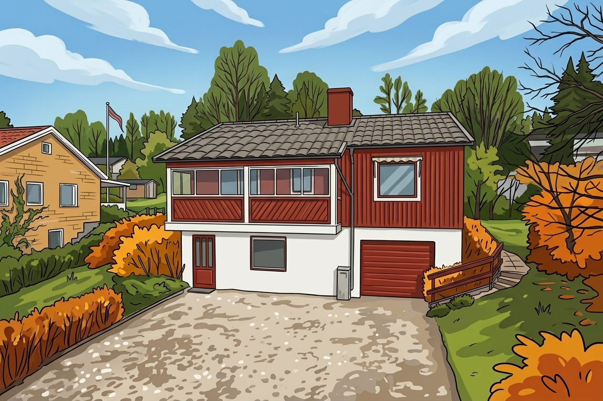

1959
Oryginalny dom
Dom rodzinny z czerwonego drewna z białymi ramami. Przedpokój, salon, trzy sypialnie i dwie łazienki na parterze. Piwnica mieści kotłownię, pralnię, pokój wspólny i garaż.
Dom · Solrosvägen 17
Wszystko, co musisz wiedzieć o kuchni, praniu, śmieciach, ogrzewaniu i wodzie — i co robić, gdy coś się zepsuje. To dom z lat 50., więc rzeczy mają patynę i czasami skrzypią.

01 · Historia domu
1959
Dom rodzinny z czerwonego drewna z białymi ramami. Przedpokój, salon, trzy sypialnie i dwie łazienki na parterze. Piwnica mieści kotłownię, pralnię, pokój wspólny i garaż.
1976
Dobudowano kuchnię, biuro (brązowy pokój), toaletę i przedpokój. Tapety i szafki w dobudowanych częściach pochodzą z lat 70.
1979
Powstał zadaszony taras od strony ogrodu. Czerwone panele, białe poręcze — w tej samej tonacji co fasada.
02 · Pokoje
Wszystkie pokoje znajdują się na parterze. Wszystkie łóżka są pojedyncze, o różnej szerokości. Całkowita pojemność domu to 4 osoby — kto śpi gdzie ustalacie wy lub Sanco.
Żółty pokój
Największa sypialnia w domu. Tapeta w kolorze musztardowym z drobnymi kwiatami z końca lat 60.
Czerwony pokój
Mniejszy pokój z tapetą w paski w kolorze terakoty z lat 70. Znajduje się najbliżej łazienki.
Zielony pokój
Ciemnozielona tapeta z motywem mchu z drobnymi złotymi i musztardowymi detalami. Własny balkon na południe, biurko przy oknie.
Brązowy pokój · biuro
Za kuchnią. Brązowa tapeta w bukiety/paski i biurko przy oknie — dobre, jeśli musisz pracować wieczorami.
Pokój w piwnicy obok kotłowni jest rozważany jako piąta sypialnia. Gdy będzie gotowy, zostanie tu dodany.
03 · Kuchnia
To, co potrzebne do gotowania dla czterech osób. Sztućce, szklanki i naczynia dla 4–6 osób.
Lodówko-zamrażarka, normalny rozmiar dla czterech osób.
Płyta i piekarnik zgodnie ze standardem lat 70. Mikrofalówka obok kuchenki.
Czajnik elektryczny. Filtry do kawy i kawę kupujesz sam.
Talerze, szklanki, sztućce dla 4–6 osób każdego rodzaju. Garnki i patelnie są.
Zmywaj ręcznie w zlewie po prawej stronie. Płyn do mycia naczyń i gąbka są w schowku gospodarczym. Nie zostawiaj niczego w zlewie na noc.
Jest w schowku
Bierzesz ze sobą
04 · Pranie i pościel
Pralka jest w piwnicy — pościel i ręczniki bierzesz ze sobą.
Jest w domu
Pralka stoi w piwnicy, obok kotłowni. Proszek do prania jest na półce powyżej. Suszarnia z ogrzanym powietrzem i stojakiem do suszenia obok pralki.
Bez suszarki bębnowej
Bierzesz ze sobą
Prześcieradeł, poszw, poszewek i ręczników nie ma w domu. Na łóżkach leżą poduszki i kołdry — nic więcej.
Zapomniałeś? Najbliższe sklepy (Jysk, Mio, Hemtex) są na mapie Okolica.
Rozmiary łóżek — dla kupujących pościel
05 · Łazienki
Przy wejściu
Toaleta i prysznic. To łazienka, której używasz szybko przy wejściu lub wyjściu.
Między sypialnią a salonem
Toaleta, prysznic i wanna. Większa łazienka — jeśli ktoś chce się wykąpać po długim dniu.
06 · Instalacje
Gdzie wszystko się znajduje i co robić, jeśli coś trzeba szybko wyłączyć.
Woda
Znajduje się w kotłowni w piwnicy, bezpośrednio po lewej stronie po wejściu. Klasyczny zawór kulowy — uchwyt w kierunku rury = otwarte, w poprzek = zamknięte.
Woda z kranu jest zdatna do picia
Prąd
Nowoczesna skrzynka w przedpokoju przy drzwiach wejściowych — wyłącznik różnicowoprądowy i automatyczne bezpieczniki. Starsze ceramiczne bezpieczniki w piwnicy zostały.
Zapasowe bezpieczniki w schowku
Ogrzewanie
Zawsze włączone, przez cały rok. Każdy grzejnik ma pokrętło 1–5 — ustaw jak chcesz. Wentylacja grawitacyjna działa sama.
07 · Śmieci i recykling
Cztery miejsca. Dwa kosze przy domu, stacja 200 m dalej, centrum dla rzeczy wielkogabarytowych. Znajdź swój przedmiot na listach poniżej i na mapie.
Następny odbiór i harmonogram: zobacz stronę główną.
Na mapie
Przy garażu
Bioodpady
Brązowe papierowe torby (schowek) · bez plastiku
Przy garażu
Odpady zmieszane
Zawiązany worek plastikowy · bez czystych opakowań
200 m stąd · Strandgatan
Czyste opakowania i gazety
Wypłucz · spłaszcz kartony · sortuj według kosza
1,4 km · 3 min autem · Returvägen 11
Odpady wielkogabarytowe i niebezpieczne
Bez umawiania · bez opłat dla gospodarstw domowych · możliwy wymóg dokumentu
Gdzie wyrzucam…
Karton po pizzy z tłuszczem?
Brudna tektura to odpady zmieszane.
Zielony koszKarton mleka z resztką w środku?
Najpierw wypłucz, złóż, oddaj jako opakowanie papierowe.
Stacja recyklinguSnus, gumy do żucia, niedopałki?
Żadne z tego nie kompostuje się. Zawiąż worek.
Zielony koszButelki PET i puszki aluminiowe?
Są objęte kaucją — oddaj w sklepie, nie tutaj.
Automat kaucyjny (Coop, Willys, ICA)Słoik szklany z metalową pokrywką?
Odkręć pokrywkę — szkło do kosza na szkło, pokrywka do kosza na metal.
Stacja recyklinguParagony ze sklepu?
Papier termiczny nie nadaje się do recyklingu.
Zielony koszKosze stoją przy garażu. Wieczorem przed odbiorem wystawiacie je na ulicę. Gdy śmieciarka opróżni, wstawcie je z powrotem do garażu. Pokrywa zawsze musi się zamykać.
08 · Awaryjnie
Duże nagłówki, krótkie kroki. Telefon na dole — dzwoń od razu przy wycieku, pożarze lub gdy czegoś nie da się rozwiązać.
Awaria — najpierw zadzwoń
Hugo Kjellsson
Przy wycieku wody
W kotłowni, bezpośrednio po lewej. Obróć uchwyt w poprzek rury.
Nie zostawiaj stojącej wody — w domu z lat 50. szybko wsiąka w podłogi i ściany.
070-390 90 51. Bez wiadomości — dzwoń, aż ktoś odbierze.
Przy awarii prądu
Czy u sąsiadów też jest ciemno? Wtedy to awaria w okolicy — odczekajcie około 15 min, zanim zrobicie coś jeszcze.
Przywróć ewentualnie wyłączony bezpiecznik. Nie używaj urządzenia, które spowodowało wyłączenie.
Zadzwoń do nas, zanim spróbujesz po raz trzeci — 070-390 90 51.
Przy pożarze
Stoi w przedpokoju — centralne miejsce, blisko kuchni. Koc gaśniczy wisi obok.
Opuść dom, jeśli ogień nie gaśnie natychmiast. Nie zamykaj drzwi, przez które normalnie przechodzisz.
Następnie do nas pod 070-390 90 51.
09 · Regulamin
Trzy zasady są niepodlegające negocjacji — ich naruszenie liczy się jako istotne naruszenie umowy. Pozostałe to zasady do obserwacji. Stopień ważności po prawej.
Pal na zewnątrz, na działce. Niedopałki do metalowej puszki na schodach — nie na ziemi.
Pies, kot lub inne zwierzę nie może przebywać w domu. Bez wyjątków.
Otwarty kominek w salonie jest dekoracyjny — nie został przebadany pod kątem palenia.
Bez śrub, gwoździ, haczyków ani taśmy w ścianach i meblach. Powiedz, jeśli coś musi być powieszone.
Ścisz telewizor i muzykę. To dzielnica domów jednorodzinnych — wszyscy mają pracę następnego dnia rano.
Nie zostawiaj niczego w zlewie na noc. Następnego dnia będzie tylko gorzej.
Obecnie są cztery łóżka — piąte miejsce do spania pojawi się, gdy pokój w piwnicy będzie gotowy.
Oba są zamknięte i używane przez nas do przechowywania. Nie używaj wjazdu w sposób blokujący je.
Można umyć samochód na wjeździe, ale polecam pojechać do myjni przy OKQ8, Hästmarksvägen 1 — pięć minut stąd.
10 · Na zewnątrz
My zajmujemy się trawą i odśnieżaniem parkingu. Wy odśnieżacie ścieżkę do wejścia.
My odpowiadamy za
Latem kosimy trawę. Zimą odśnieżamy parking, abyście mogli wjechać i wyjechać.
Wy odpowiadacie za
Łopata jest w zewnętrznym schowku przy garażu, piasek w beczce obok. Posypujcie, gdy trzeba — to wystarcza.
Ogród
Bez wymagań. Ale mile widziane — i tak tutaj mieszkacie, a 940 m² działki sporo zwiewa jesienią.
Taras
OK. Ufamy zdrowemu rozsądkowi — trzymaj odstęp od drewnianej ściany i porządnie wygaś węgiel.
Wszystko, co dotyczy domu, kieruj do Hugo. Wszystko, co dotyczy zakwaterowania — umowy, harmonogramu, kodów — kieruj do Sanco.
Dom
Wyciek wody, awaria prądu, niedziałające wi-fi, zepsuty sprzęt AGD — lub cokolwiek innego, co nie działa.
Zakwaterowanie · Sanco
Rezerwacja, harmonogram, umowa, kody do skrzynki na klucze.